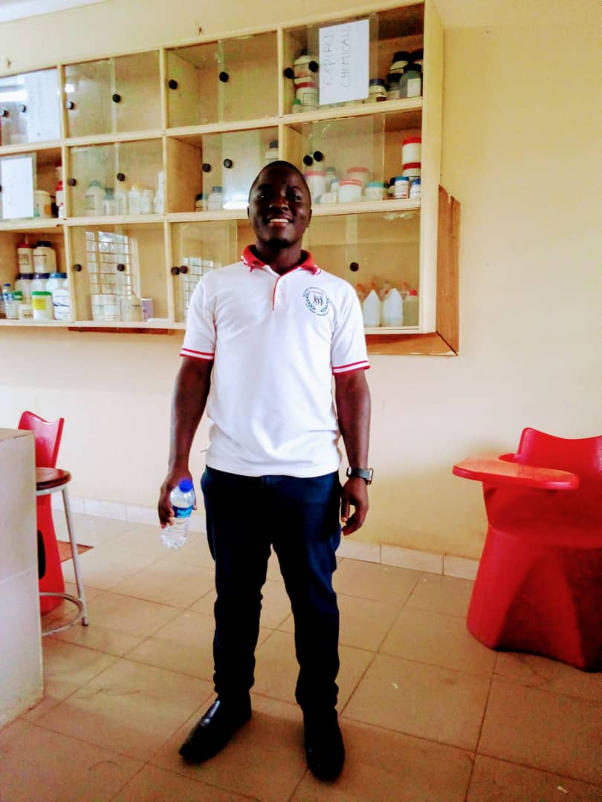
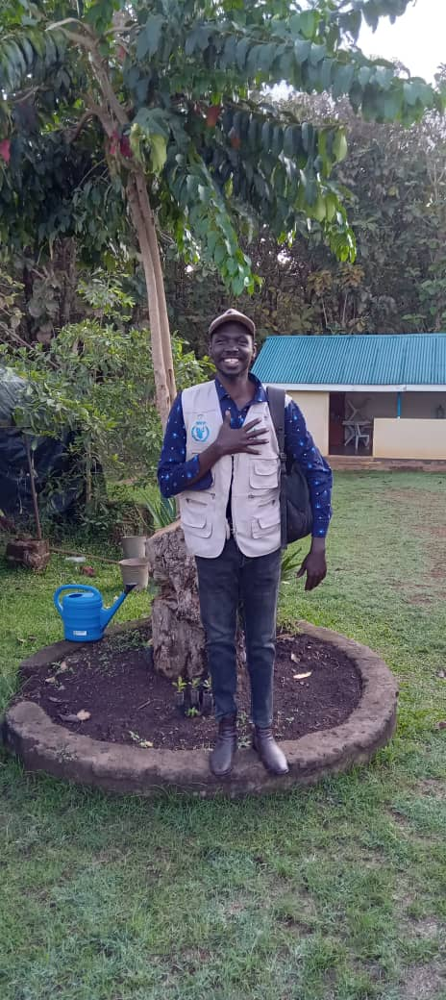

A shared commitment to inclusive, community-driven and sustainable development.
Global All Integrated Development Initiative (GAIDI) was founded with a deep conviction that communities have the capacity to transform when they are supported with knowledge, opportunities, partnerships and inclusive systems.
Our journey is rooted in the realities faced by vulnerable populations, including persons with disabilities, youth, women and girls at risk, single mothers, refugees, host communities and economically disadvantaged households.
Through GAIDI, we seek to build an organization that is practical, accountable, inclusive and responsive to the real needs of communities in Gulu City, Northern Uganda and beyond.

Dr. Felix Eling is a Public Health Professional, Researcher, Academic Leader, Author, Disability Inclusion Advocate and Development Practitioner with extensive experience in health systems strengthening, research, education, community development and organizational leadership.
He currently serves as the Executive Director of GAIDI and is a seasoned public health professional, researcher, educator and development practitioner with extensive experience in academia, community health programming, research supervision, disability inclusion and organizational leadership.
Throughout his career, he has held leadership positions in higher education, health systems strengthening and civil society initiatives, contributing to capacity building, health promotion, evidence-based decision-making and community empowerment.
He previously served as Head of Pharmacy Department and Clinic In-charge at East African Institute of Management, Business and Science (EA-IMBS), Gulu City, and as a Lecturer and Research Supervisor at Gulu College of Health Sciences. He has also led and supported numerous disability inclusion initiatives through the Sound of Silence Africa Initiative (SOSAI), championing sign language promotion, accessibility and inclusive health services.
His work reflects a strong commitment to advancing public health innovation, disability rights, research excellence and sustainable community development for vulnerable populations across Uganda and beyond.
“True development occurs when every individual, regardless of background or ability, is given an opportunity to realize their full potential.”

Mr. Ayaka Isaac is a Food Security and Livelihoods Specialist with extensive experience in refugee response programming, agricultural development, climate-smart agriculture, market systems strengthening, value chain development and community economic empowerment.
He currently works with Action Against Hunger and contributes strong technical expertise in livelihoods, food security, agriculture, entrepreneurship and community resilience programming.
“Strong communities are built when people are empowered with skills, opportunities and sustainable livelihoods.”
Many vulnerable communities continue to face interconnected challenges such as limited access to health services, unemployment, disability-related exclusion, inadequate education support, weak livelihoods and limited participation in decision-making.
GAIDI responds to these challenges through an integrated development model that combines health and wellbeing, livelihoods and economic empowerment, education, innovation and research, and disability inclusion.
We are committed to ensuring that vulnerable and marginalized groups are not left behind.
We believe communities should participate meaningfully in shaping their own development.
We are committed to transparency, integrity, safeguarding and responsible resource use.
We welcome collaboration with individuals, institutions and development partners.
We invite partners, donors, volunteers and community stakeholders to join GAIDI in empowering communities for a brighter future.
Partner With Us